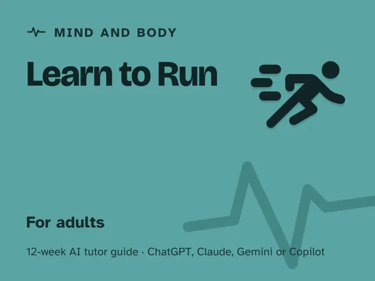

Learn to Run
$29Instant download: a PDF to read, a browser copy, and the AI-tutor file you hand straight to any AI assistant.Buy it on Etsy →
Take the free placement check first: 15 minutes, and it names the week to start at.
A masterclass you actually finish, for a sport many beginners quit or get hurt trying. A common way it goes wrong: they skip form, ignore pacing, and grind out miles until an ache turns into an injury or the whole thing stops being fun. This 12-week plan teaches running from the ground up instead: posture and cadence, breathing and pacing by feel, the run-walk method, and a gradual build that respects your body's actual timeline. An AI tutor checks your form from your description, holds you to a sane progression every week, and never lets "just one more minute" turn into a setback. No experience needed, no prior fitness assumed.
Format: A digital guide with one ~60-minute session each week, fully scripted, with an AI tutor as your running coach. Every step is timed and written out for you. No running experience, no fitness background, and no prior AI experience needed. Mastery-gated: you move on when the checkpoint is real, not when a week passes.
What you get
- 12 deep weekly sessions (~60 minutes each), every one built the same reliable way: a plain-language concept, a concrete worked example, a minute-by-minute session plan with the AI-tutor prompts built in, a "show me" checkpoint, common mistakes to avoid, and practice.
- A "Never used an AI chat assistant? Start here" onboarding that takes a complete beginner from zero to ready in about five minutes. No paid plan needed, any free AI assistant works.
- Four rescue prompts up front for when you're discouraged or sore, when the tutor pushes you too hard, when a session felt too easy, or when you want to check you really understand it, so you're never staring at a blank chat box.
- A read-me-first orientation that reframes running from a grind into a skill you build in order, with the one rule that carries the whole course: a tutor that holds you back from too much, too soon, instead of cheering you into an injury.
- Tutor guardrails built into every session: each week's plan starts the tutor for you, with a "level me up" step and a "hold me back" step, all set up to keep your progression safe and route pain to a real doctor.
The 12 weeks
- Why You Quit Last Time (And Won't This Time)
- How to Actually Run: Posture, Cadence, Foot Strike
- Breathe and Pace by Feel, Not by the Clock
- The Run-Walk Method: Your On-Ramp to Continuous Running
- Building Up Safely: The Art of More, Slowly
- Shoes, Surfaces, and the Gear That Actually Matters
- Finding Your Weekly Rhythm
- Adding Hills and Variety Without Wrecking Yourself
- Recovery and the Injuries That Take Runners Down
- Project Week I: Plan Your First Continuous Run
- Project Week II: Run It
- Demo Day: Lock In the Runner You've Become
Who it's for
Adults who want to start running and actually enjoy it, including anyone who's tried before and quit from boredom, burnout, or injury. Zero running background assumed; if you can walk briskly for ten minutes, you're ready to start.
Why this instead of a free chatbot
A raw chatbot will hand you a generic "couch to 5K" plan and cheer you toward whatever pace you name, including one that gets you hurt. This pack ships the structure and guardrails it lacks: a form-first method, a real 12-week progression paced by the roughly-10%-a-week rule, and a tutor set up to check your effort and form before your mileage, and to stop you at the first sign of sharp or worsening pain instead of cheering you through it. Enjoyment and longevity, not just a finish line.
Safety
This is educational content, not medical advice. It teaches beginner-friendly running form and a gradual training progression, and (just as importantly) how to recognize soreness that's normal versus pain that means stop. Consult a physician before starting, build up gradually, and stop immediately if you feel real pain. Written for adults; teens should use it only with a parent or guardian involved and a doctor's okay.
FAQ
- Do I need any running or fitness experience? None. Week 1 starts with a brisk walk and a look at why past attempts stalled; every session is broken into small, checked steps.
- Never used an AI chat assistant before? That's fine; the guide's first section walks complete beginners through setup in about five minutes.
- Which AI does it use? Works with any modern AI assistant: ChatGPT, Claude, Copilot, or Gemini. The free version of any of them is enough. Form checks work from your own description of your jog; a photo or short clip helps if your assistant accepts one, but isn't required. Each session's tutor instructions are already written into the guide; no special software.
- Is this medical advice? Who's liable? No. It's educational only, not medical advice. Consult a physician before starting a running program, build up gradually, and stop if you feel pain. You assume all risk; the author and the AI tutor are not liable for any injury.
- What if I've gotten hurt running before? Week 9 is built for you. It covers three of the most common beginner running injuries, their warning signs, and when a symptom means seeing a doctor instead of pushing through.
- Do I need to run every day? No. The plan builds toward 3-4 runs a week with real rest days, because that beats daily grinding for beginners.
- Refunds? Standard marketplace refund policy applies.
$29Instant download: a PDF to read, a browser copy, and the AI-tutor file you hand straight to any AI assistant.Buy it on Etsy →